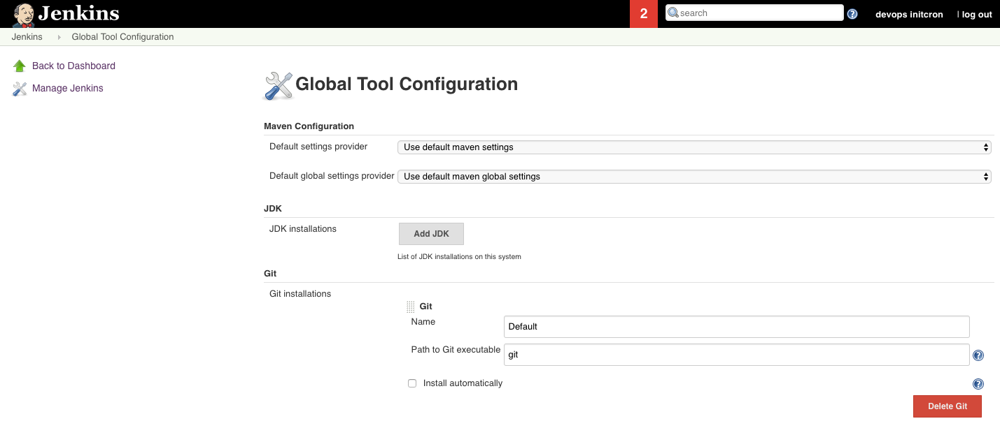
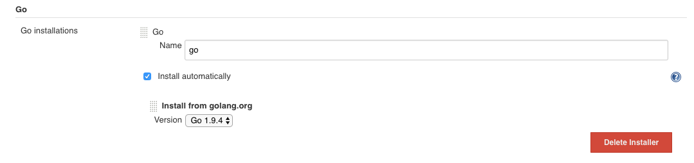
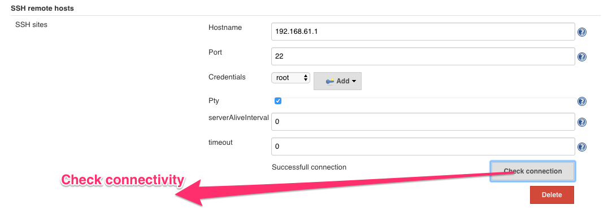
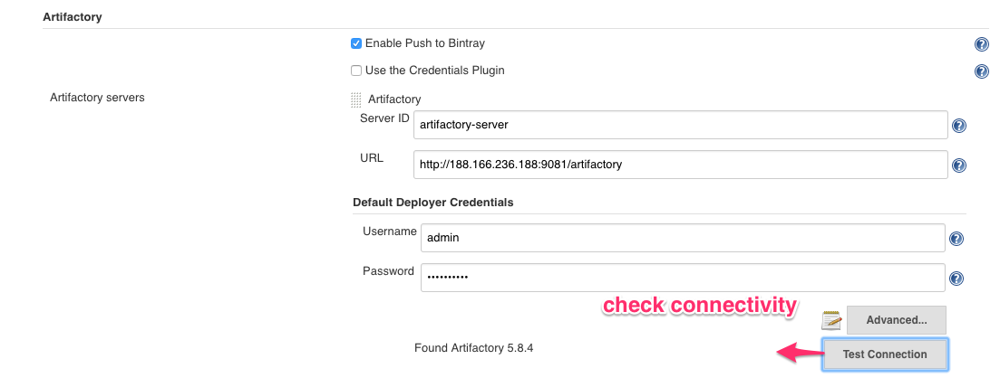

Jenkins Tools configurations
Once you installed all plugins, we can go ahead to make required changes in configurations.


Configuring Maven
- Go to section Maven
- Provide name for maven installation
- Select check box to install it automatically and select version to be installed.

Configuring NodeJS
- Go to section NodeJS
- Provide name for nodejs installation
- Select check box to install it automatically and select version to be installed.
- You can provide names to install global modules, which very common for all services.

Configuring Go
- Go to section Go
- Provide name for go installation
- Select check box to install it automatically and select version to be installed. 
Configuring SSH for remote host
- Go to section SSH remote hosts in Configure Systems setting.
- Provide host name for hosts to ssh.
- Select ssh port 22.
- We need to provide credentials for same. We can create credentials in Configure Credentials menu.
- Select check box to install it automatically and select version to be installed. 
Configuring Artifactory
- Provide the server id for Artifactory server.
- Provide URL of Artifactory server.
- Provide default credentials for Artifactory.
- once you added credentials check the connectivity, it will provide Artifactory version (e.g 5.8.4) 